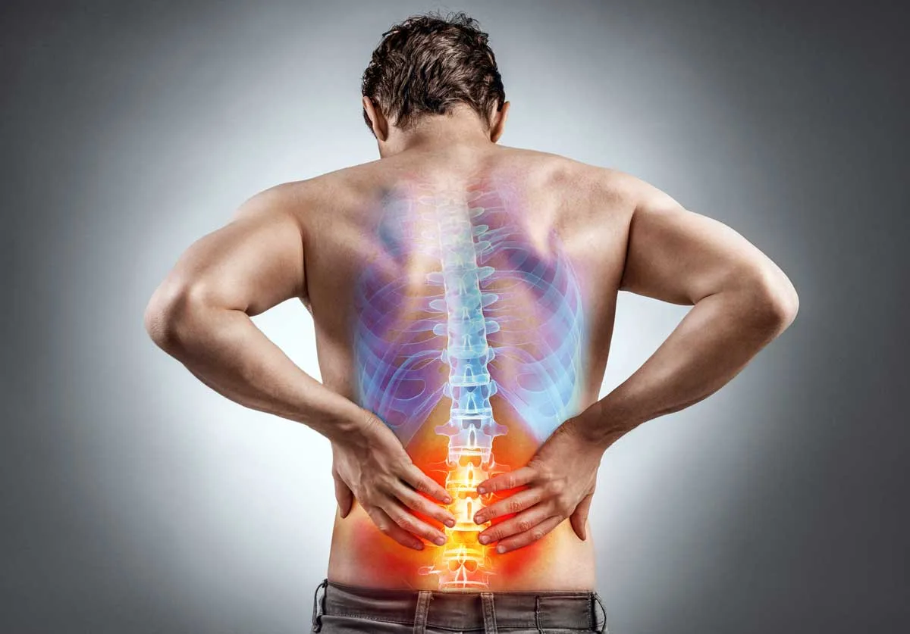

⏱ Recovery: 30–60 days
Sciatica
Sciatica is caused by compression or irritation of the sciatic nerve, causing pain that radiates from the lower back down through the leg. Ayurvedic treatment targets the root Vata imbalance causing nerve inflammation.
Common Symptoms
- • Shooting pain from lower back to leg
- • Numbness or tingling in leg/foot
- • Weakness in affected leg
- • Pain worsens on sitting
Therapies Used
⏱ Expected Recovery: 30–60 days